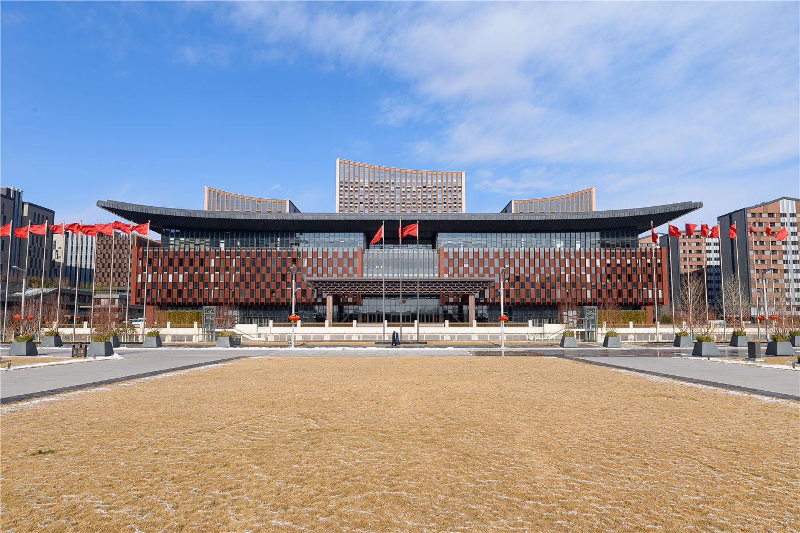

2026 중국 브랜드 포럼, 슝안서 개최…'과학기술·책임'이 화두
2026 중국 브랜드 포럼이 허베이성 슝안신구에서 열렸다. 과학기술 혁신과 사회적 책임을 통해 브랜드 가치를 높이자는 논의가 중심이 됐다.
유종한 기자 · 2026.06.19
橋중국

인민망은 2026 중국 브랜드 포럼이 슝안에서 개최됐다고 전했다. 기업들이 기술 혁신과 책임 경영으로 '신(新)·우(優)'를 향한다는 메시지가 강조됐다.
광고 문의 · 300×250브랜드 경쟁의 새 무대
제품의 품질을 넘어 기술력·신뢰·사회적 책임이 브랜드 가치를 좌우하는 시대다. 포럼은 중국 기업이 어떻게 차별화된 가치를 만들어 국내외 시장에서 신뢰를 얻을지를 다뤘다.
슝안신구라는 개최지 자체가 혁신과 미래 도시의 상징으로 활용됐다. 브랜드 전략과 도시·산업 정책이 맞물리는 흐름을 보여준다.
華橋時報는 중국의 산업·브랜드 동향을 경제의 관점에서 중립적으로 전한다. 무역과 유통에 종사하는 화인 기업에도 참고가 될 만한 사안이다.
출처·참고 (사실 확인용 — 본문은 직접 재작성)
· 인민망(人民網) 2026.06.18 '2026中國品牌論壇在雄安舉行'
· 인민망(人民網) 2026.06.18 '2026中國品牌論壇在雄安舉行'